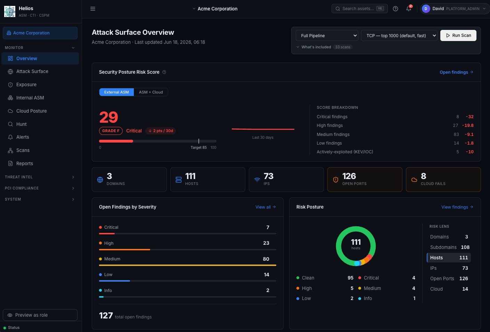
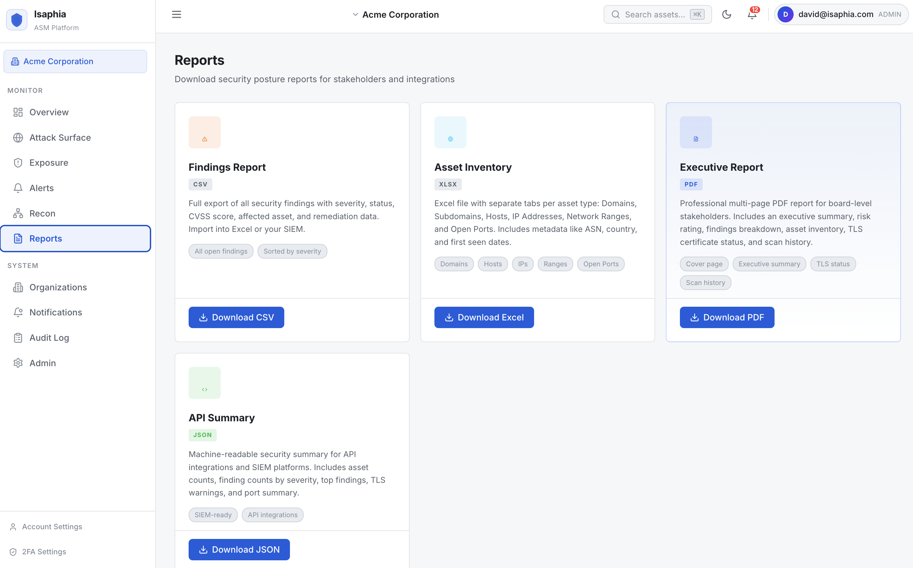
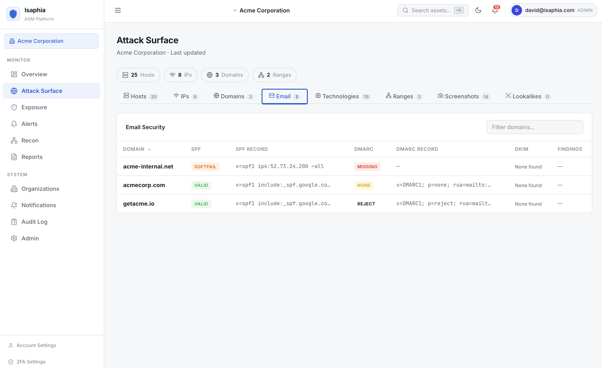
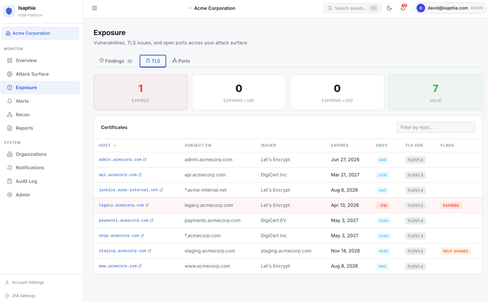

External ASM · A module of Helios by Isaphia
See what attackers see — before they do.
External ASM is the outside-in module of Helios by Isaphia — it continuously discovers, monitors, and prioritizes every internet-facing asset your organization owns, including the ones you forgot.
Request a DemoThe asset you don't know you own is the one attackers find first
Forgotten subdomains, shadow cloud, expired certificates, leaked credentials, exposed admin panels.
Most breaches start outside the perimeter you actively monitor. Isaphia ASM closes that gap by continuously discovering and tracking everything on your external attack surface — across cloud, on-prem, and acquired-company footprints — and surfacing what matters most.
In plain terms: External ASM is one part of Helios, a cloud (SaaS) platform — you log in from any web browser, with nothing to install on your side. You can run it yourself, or have our team operate it for you. Either way, it works from the outside-in, the way an attacker would.
What Isaphia ASM Covers
One platform — full external visibility, without running your own scanner fleet.
Subdomains, IPs, CNAME aliases, cloud assets, and M&A footprint — found, linked, and inventoried automatically.
CVE detection with severity, evidence, and remediation guidance.
AWS, Azure, and GCP exposure mapping across accounts and regions.
Open ports, banners, and services on every reachable host.
Cert expiry tracking, weak ciphers, self-signed certs, protocol downgrades.
Leaked credentials, breach mentions, and paste-site exposure.
Exposed API keys, tokens, and private keys in public repositories.
Frameworks, library versions, and end-of-life software flagged automatically.
SPF, DKIM, and DMARC posture across all your sending domains.
DNS hygiene, hijack risk, and orphaned records identified continuously.
Surface-level web application findings across all discovered hosts.
Lookalike domains scored by a transparent risk rubric — parked and for-sale domains auto-suppressed so analysts triage live phishing infrastructure first.
Employee and role-based addresses surfaced from OSINT sources, certificate SANs, and public pages — so you see the same contact footprint a targeted phishing operator would.
See It in Action
A look at the dashboard your team actually uses — built for clarity, not dashboards-for-the-sake-of-dashboards.

Attack Surface Overview. One screen for asset counts, severity breakdown, and the findings that need attention now.

Findings, inventory, and executive views — CSV, XLSX, PDF, and JSON for your SIEM or board pack.

SPF, DKIM, and DMARC posture across every sending domain — at a glance, with the exact records you need to fix.

Every cert across your surface — issuers, expiry, weak protocols, self-signed and expired certs flagged automatically.
How It Works
Continuous discovery, contextual prioritization, and integration with the tools your team already uses.
Provide a seed domain. Isaphia ASM expands outward — subdomains, IPs, cloud assets, certificates, M&A footprint — and builds a living inventory.
Every asset is rescanned on a continuous cycle. New CVEs, leaked credentials, expiring certificates, and exposed secrets are surfaced as they appear.
Findings are ranked by severity, exploitability, and exposure context — so your team focuses on the handful of issues that actually move risk.
Push findings into Jira, ServiceNow, Splunk, Slack, Teams, or any webhook. Generate executive, inventory, and findings reports on demand.
Two Ways to Run It
Same platform, same coverage — choose how much you want to operate yourself.
Run it yourself
Direct dashboard access for your team. Configure scopes, run scans, review findings, export reports. Full RBAC and unlimited users. Ideal for in-house security teams that want hands-on control.
We monitor for you
Our team triages findings and escalates only what matters. Monthly executive briefings, direct line to security analysts, and quarterly business reviews. Ideal for organizations without a dedicated cybersecurity team.
Built to Fit Your Stack
Findings go where your team already works — no parallel inbox to babysit.
Frequently Asked Questions
Plain-English answers to the questions we hear most often.
What is Isaphia ASM, in plain English?
It's a cloud-based security platform that maps every internet-facing piece of your organization — websites, servers, cloud applications, email domains, certificates — and tells you, continuously, what an attacker would find first. You log in from a web browser; there's nothing to install on your side.
Is it a SaaS product?
Yes. Isaphia ASM is delivered as Software-as-a-Service (SaaS). You can run it yourself through your own dashboard (Self-Service SaaS), or have our team operate it for you (Managed Service). Either way, the underlying platform is the same — what changes is who watches it day to day.
Do I need to install anything on our network?
No. No agents, no appliances, no software on your machines, no firewall rules to open. Isaphia ASM works from the outside-in — the same way an attacker does — starting from a seed domain you provide.
Who is this for?
Any organization with a presence on the internet — websites, customer portals, email, cloud apps — that wants to know if any of it is exposed, misconfigured, or vulnerable. You do not need a dedicated cybersecurity team; many of our customers choose the Managed Service for exactly that reason.
How is this different from a vulnerability scanner like Tenable or Qualys?
Traditional scanners assume you already have a list of assets to scan. Isaphia ASM finds the assets first — including the ones nobody remembered to put on the list. Vulnerability detection is one capability among many; the bigger value is the discovery and the continuous re-checking.
Where is our data stored, and how is it secured?
Data is stored in a hardened cloud tenant with per-customer isolation, role-based access control, SAML/OIDC single sign-on, optional 2FA, and immutable audit logs. Detailed security and compliance documentation is available on request.
How long does it take to get started?
Most customers see meaningful results within hours of providing a seed domain. There is no deployment project, no integration sprint, and no rollout — discovery begins as soon as your tenant is provisioned.
Can I try it before buying?
Yes. Request a demo and we'll walk through your actual external surface — not a generic demo tenant — so you can see what's currently exposed before deciding.
How does pricing work?
Pricing scales with the size of your external attack surface and whether you choose Self-Service SaaS or the Managed Service. Users are unlimited within your tenant — no per-seat fees. Contact us for a scoped quote.
Part of Helios by Isaphia
External ASM is one of four modules in Helios, our unified exposure-management platform. Add the others as you grow — they share one asset inventory and one dashboard.
Internal ASM maps what's reachable inside your network · CTI tells you what attackers already know about you · CSPM keeps your cloud configuration in check.
Stop guessing what attackers can see
Get a walkthrough of Isaphia ASM scoped to your environment. We'll show you what's exposed today — and what to fix first.
Talk to Us About Isaphia ASM